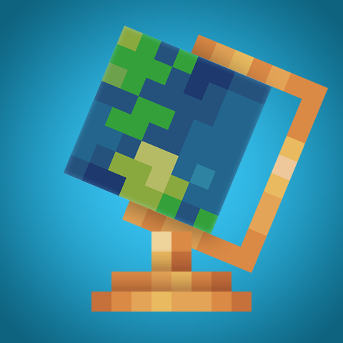

Supplementaries
DecorationMany functional and useful Vanilla+ blocks
Requires: Moonlight Lib
Optional: amendments (missing), Create
Incompatible with: , Sodium
Required by: Supplementaries X Not Enough Trials
Optional for: Courier Owls

Many functional and useful Vanilla+ blocks